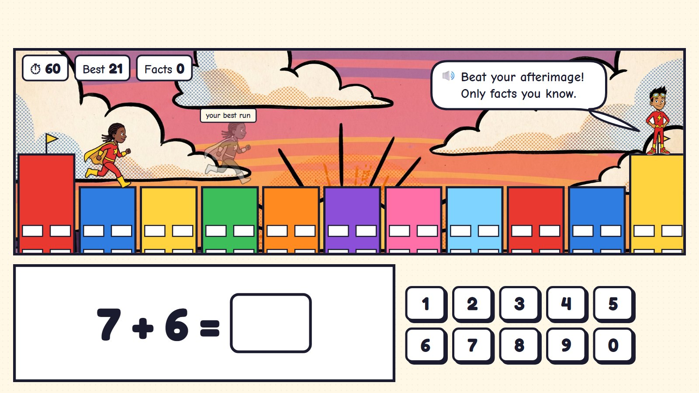
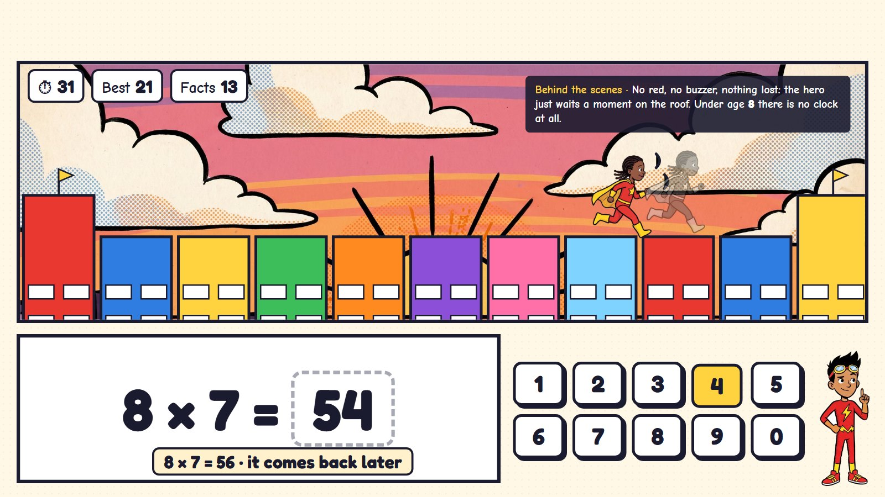
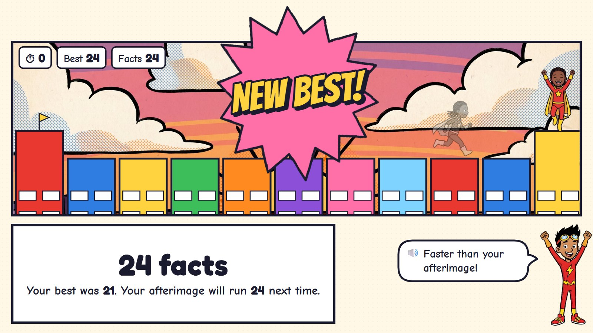
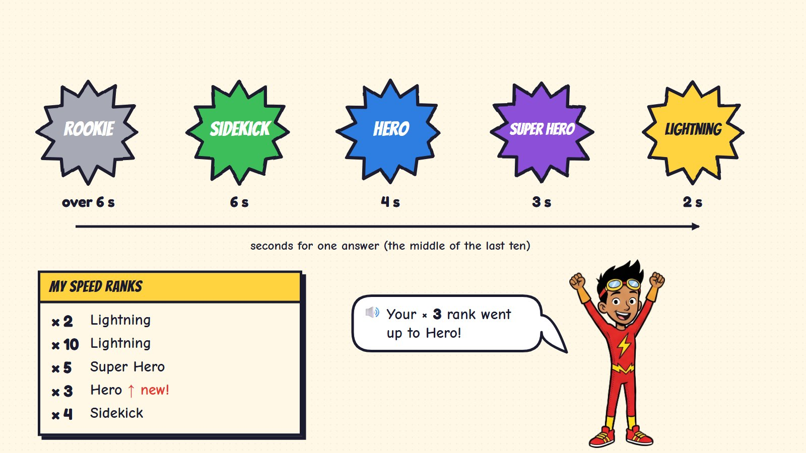
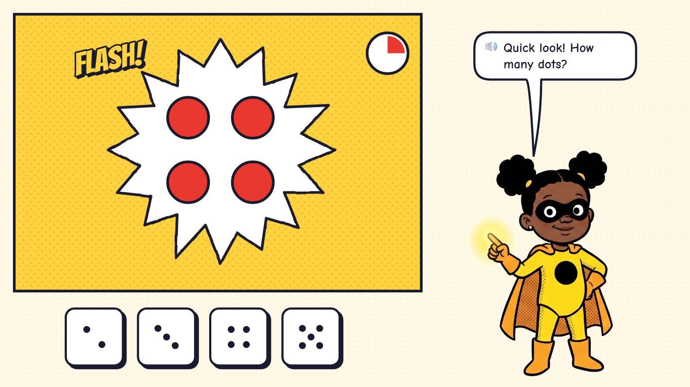
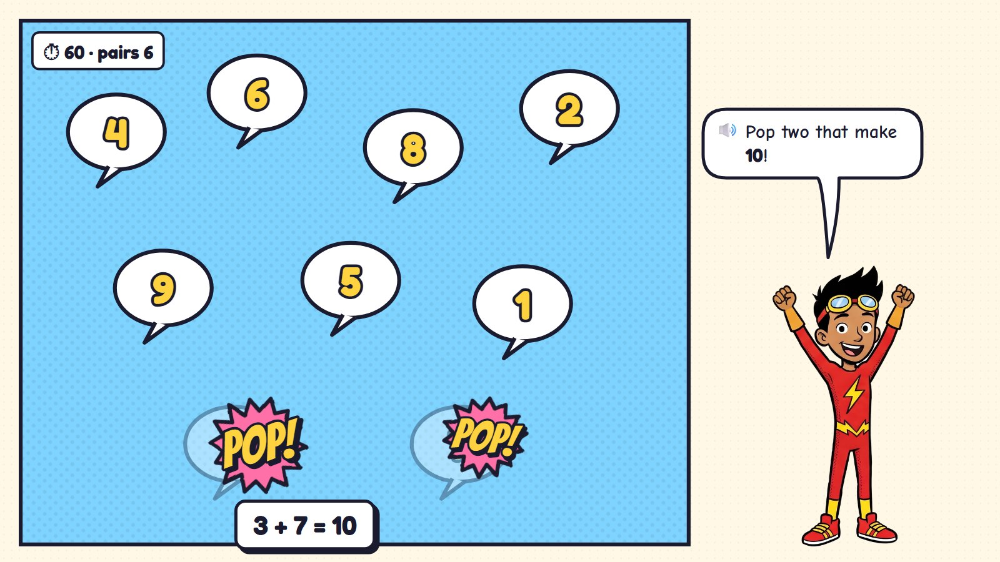

Speed: Zip's Speed Training
Knowing number facts quickly (7 + 6, 8 × 7) frees a child's mind for harder maths. Zip, the fastest hero, trains the child on the roof of headquarters: every fact answered is one leap across the city's rooftops, and a see-through afterimage of the child's own best run runs alongside. Each family of facts has its own speed rank, and the Power Grid shows every fact turning gold as it becomes quick and sure.
One run, six moments

1Ready
A sunset rooftop run. The child's hero on the first roof; ahead, a see-through copy, the "afterimage", is their own best run so far. Below: the fact and the number pad.
🔊 Beat your afterimage! Only facts you know.
Only facts the child has already learned. From age 8 a 60-second round (the timer can be hidden); ages 5–7 get ten facts and no clock.

2Running
Every right answer is one leap to the next roof. Five in a row: TURBO.
Only the runner moves, up in the picture; the fact stays big and still and the pad never moves.

3A miss
8 × 7: the child typed 54. The hero waits a moment on the roof; the answer shows (8 × 7 = 56) and the fact comes back later in the round.
No red, no buzzer, nothing lost.

4A new best
Time is up: 24 facts, past the afterimage. Next time the afterimage runs 24.
🔊 Faster than your afterimage!
The afterimage is always the child's own best: there is no race against other children.

5Speed ranks
One rank for each family of facts (× 2, × 3 …), from the middle time of the last ten answers: Rookie, Sidekick, Hero, Super Hero, Lightning.
🔊 Your × 3 rank went up to Hero!
A rank goes up, never down: a slow day does not take a rank away.

6The Power Grid
Every times fact is a square. Gold: quick and sure. Blue: learning. Grey: not met yet. Today three squares turned gold.
🔊 Three new gold squares today: 3 × 4, 4 × 3 and 4 × 4!
Adding and taking-away facts get their own grid. Parents see the same as a plain table.
For the youngest, and for pairs to ten


Fast, never stressful
✋ Still and steady
The fact is big and still; the pad never moves. Only the runner moves, out of the way at the top. A miss shows the right answer for a moment, and that fact comes back later in the round.
⏱️ The clock
Ages 5–7: ten facts and no clock. From age 8: an optional 60 seconds, and the timer can be hidden. A child who turns it off is never paid less.
🟨 Gold squares
A fact turns gold when it is right on the first try within about 3 seconds (4 in Grade 1), on three different days. Only learned facts come into the run, so a child is never timed on something new.
🦸 Against yourself
The afterimage is the child's own best run, and the ranks are the child's own. No ranking against other children.
Questions about speed
- Zip's rooftop run with the afterimage, as the daily warm-up: does this feel right?
- Speed ranks for each family of facts (Rookie to Lightning), plus the Power Grid: both, or only the grid?
- Bubble Pop as a second speed game for number pairs: keep it?